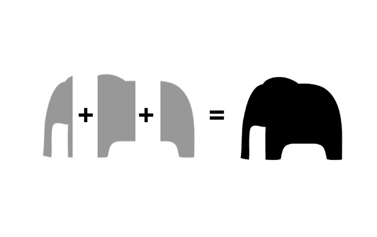
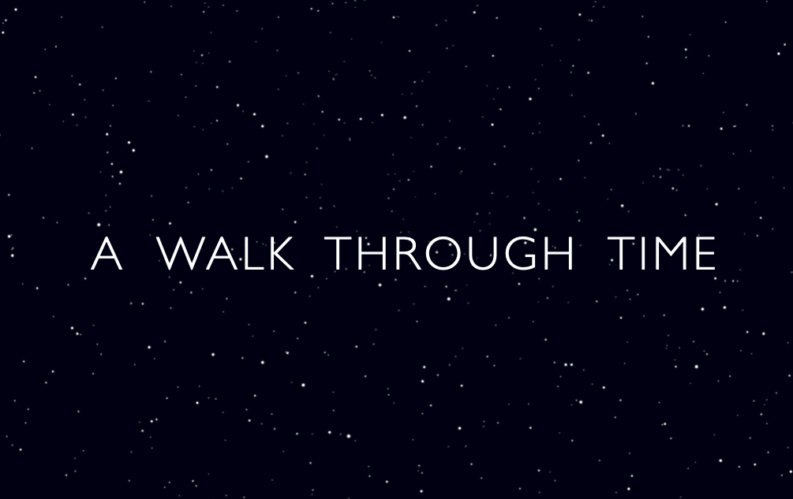

Learner · Tinkerer · Builder
Hi, I'm Sandeep.
I build things that are unique, useful, beautiful, and sometimes radical. I'm drawn to big questions and patterns across the disciplines of science and technology, history, art, design, and philosophy.

Selected work

LaserChat — app previewLaserChat
A council of AI agents that think differently, debate each other, and converge on answers with fewer blind spots.

Walk Through Time — previewA Walk Through Time
An interactive history of everything — six nested time-scales that zoom from the Big Bang to human civilization.
Writing & talks
Essays, notes, and the occasional talk will land here as they're ready. I'd rather publish something worth your time than something on schedule.
A bit about me
I'm a product builder who never really picked one field. I follow curiosity across science, history, art, design, and philosophy, and I get the most satisfaction when an idea from one collides usefully with another.
Most of what I make starts as a small question I couldn't stop thinking about. I build to find the answer — because the fastest way I know to understand something is to try to make it myself.